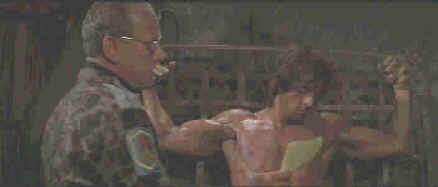

Artisan/191985/108m/ANA,WS 2.35
Rambo: First Blood Part II, begins the mythmaking. After an interesting and relatively believable situational confrontation in the first Rambo film, the series quickly launches down the road to action cliche. You start out with John Rambo breaking rocks in prison(Michaelangelo looking for the perfect marble for a statue of himself?)when Colonel Traubman arrives on the scene to resurrect his fighting machine for a new assignment in Southeast Asia. Traubman asks Rambo to revisit the days of his glory by finding out if there are any American prisoners of war being held in Vietnam.
The villains are defined in cartoon terms. There are the mercenaries running Rambo in the operation, the sadistic Vietnamese running the prison camp and the more sadistic Russians running the Vietnamese. They get more than they bargain for with Rambo, as the ineffectual Colonel Traubman enjoys pointing out to the mercenaries. Once Rambo is haphazardly parachutes in to the jungle from a helicopter dispatched from the Thai base camp, the film is a relentless montage of stalking, killing, and torture. Will I be spoiling anyone’s fun if I assure you that Rambo gets even with everybody that has acted out of line in this movie. He even gets to make a couple of patriotic speeches with moving a facial muscle.
 |
| A Russian tries to get Rambo to talk. Good Luck!©Artisan |
Director George
Cosmatos keeps the actors moving through bullets and explosions with little hesitation.
Cosmatos’s style is "let there be action," with no subtlety. Photgraphy and
stunts are handled with expertise, Stallone performs physical feats with aplomb, and the
production team does a good job of turning mundane locales into an exotic war landscape.
Usually I find a Jerry Goldsmith score enhances a film, but with this time out the music
is so pumped it actually competes with the action.
The widescreen images are happily delivered anamorphic 2.35.
Detail is excellent and color intense and accurate. Explosive transitions are delivered
with power and control. Contrast levels provide optimum information in night scenes and
day scenes have maximum screen snap. The Dolby 2-channel provides excellent surround
information, with fine pans from left to right. The mix seems somewhat bass shy. The music
typically overpowers the special effects, a poor choice. Explosions with more impact would
have been preferable.A poor layer change freezes on mercenary Murdock's face for a long
moment before switching over in this dual layer disc at around the one hour mark.
The heart of the The Cosmatos commentary is direct and
comfortable. There are bits of information about how filmmaking decisions are made. For
instance, he relates that when the Vietnamese girls recognizes Cyrillic lettering on an
automatic weapon, she says "Russian," which was looped in after a preview
audience indicated they did not understand that the weapon was Russian from the visual
alone. I like the tale of the limp snake and the sunken sampan adds good color too.
Cosmatos describes one of the shoot-outs as a "squibs galore scene." That’s
one I will always remember. It’s not easy to speak about a movie non-stop for almost
two hours. Consequently, Cosmatos lapses at times into describing the action we are seeing
on the screen, but he is enjoyable company while watching Rambo: First Blood Part II. A
documentary, An American Hero's Journey," is also part of the special edition.
For the most part writer David Morrell, the author of the Rambo novel, and
Christopher Vogler, a studio executive who wrote a book paralelling myths and modern
movies, try to establish the classical mythological parallels of Rambo. It's a long
stretch and wide yawn for this viewer.